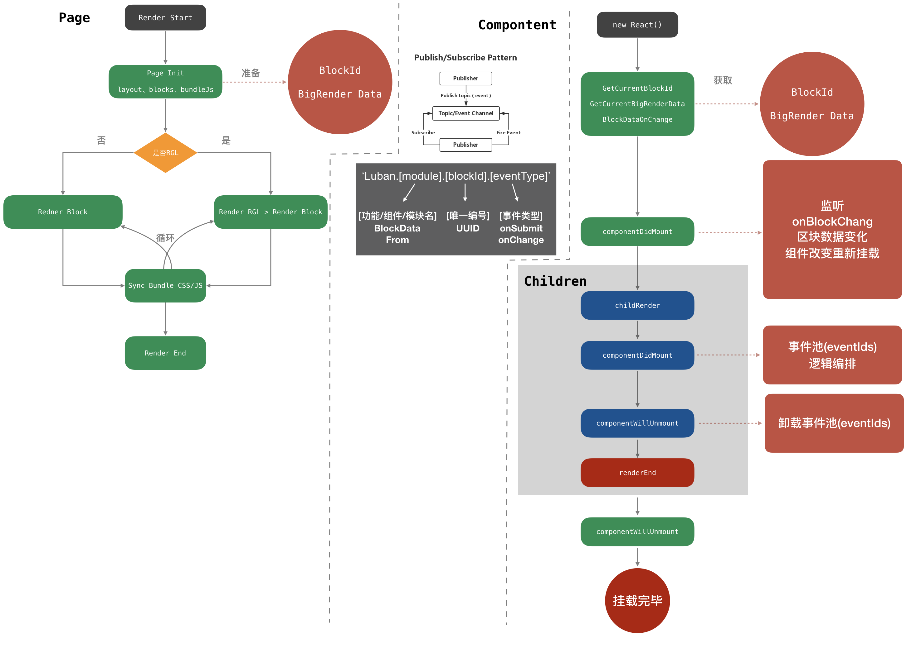

鲁班应用搭建平台
1.1.
Introduction
1.2.
GUI的那些事
1.2.1.
应用的构成
1.2.2.
BigRender
1.3.
鲁班应用搭建平台
1.3.1.
鲁班
1.3.2.
鲁班时序图
1.3.3.
鲁班BigRender
1.3.4.
鲁班可视化布局
1.3.5.
加载器
1.3.6.
业务编排
1.4.
浏览器渲染
1.4.1.
渲染原理
1.4.2.
路由History
1.4.3.
服务端渲染SSR
1.5.
设计模式
1.5.1.
设计模式
1.6.
函数式编程
1.6.1.
函数式编程
1.7.
JS基础知识
1.7.1.
PubSub JS源码解读
1.7.2.
React Virtual Dom Diff
1.7.3.
Redux数据流
1.7.4.
Redux设计原理
1.7.5.
nodejs中流(stream)的理解
1.7.6.
node子进程spawn,exec
1.7.7.
知识点清单
1.7.8.
闭包
1.7.9.
JavaScript中的this
1.7.10.
原型(prototype)和原型链(proto)
1.7.11.
ES6全部特性
1.7.12.
算法
1.7.13.
AST 抽象语法树
1.8.
leetcode
1.8.1.
1、两数之和
1.8.2.
2、两数相加
1.8.3.
88、合并两个有序数组
1.9.
P7、P8知识点
1.9.1.
前端知识题
1.9.2.
答案
1.10.
行业思考
1.10.1.
AI时代验证码的攻与防
1.10.2.
Low/No Code Platform
1.10.3.
5G+AI+IoT 超级互联网时代的思考
1.11.
MD演示
1.11.1.
API
1.11.2.
Alert
1.11.3.
Demo
本书使用 GitBook 发布
鲁班时序图
鲁班时序图

results matching "
"
No results matching "
"